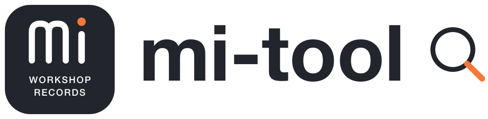
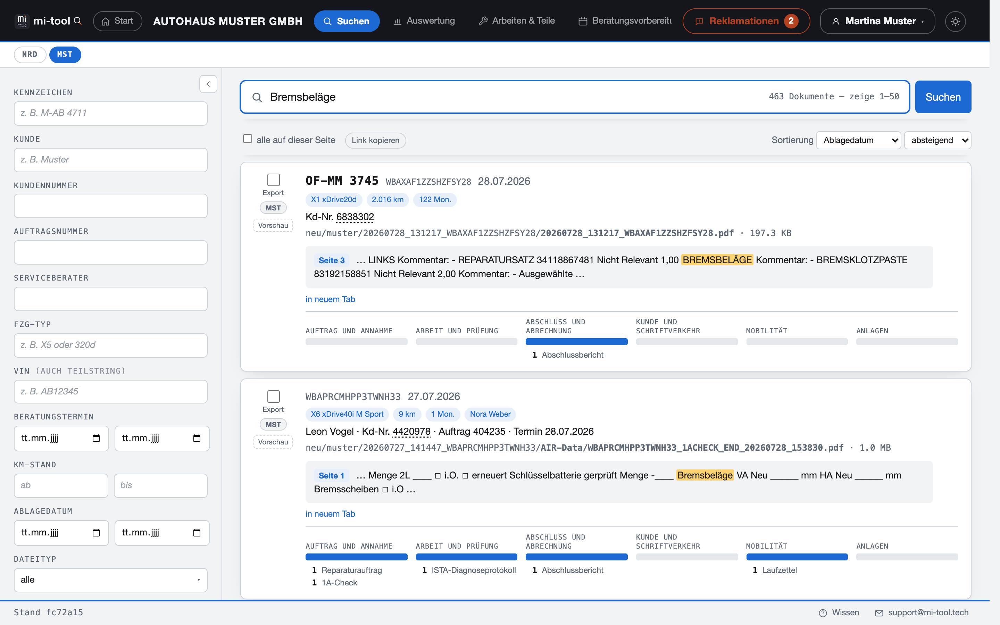

Strategie & Organisation
Unternehmensberatung
Wenn die Richtung klarer werden soll.
Ich unterstütze Sie dabei, die Ausgangslage zu analysieren, Prozesse zu hinterfragen und Prioritäten für Ihr Unternehmen festzulegen.
Frank Töpfer · Unternehmensberatung & Interimsmanagement
Klarheit schaffen. Verantwortung übernehmen. Veränderungen umsetzen. Ich unterstütze kleine und mittelständische Unternehmen – mit Erfahrung im Autohandel, in der Führung und in der Digitalisierung.
Abläufe und Herausforderungen erfassen.
Prioritäten und nächste Schritte festlegen.
Gemeinsam im Betrieb wirksam werden.
Wo ich unterstütze
Beratung und operative Mitarbeit greifen ineinander. Welche Unterstützung sinnvoll ist, richtet sich nach Ihrer Situation.
Strategie & Organisation
Wenn die Richtung klarer werden soll.
Ich unterstütze Sie dabei, die Ausgangslage zu analysieren, Prozesse zu hinterfragen und Prioritäten für Ihr Unternehmen festzulegen.
Verantwortung auf Zeit
Wenn Führung oder zusätzliche Kraft fehlt.
Ich übernehme operative Verantwortung bei Führungsvakanzen und begleite Projekte auf Zeit – in enger Zusammenarbeit mit Ihrem Team.
Branchenkenntnis
Wenn die Lösung zum Betrieb passen muss.
Branchenspezifische Unterstützung für den Automobilhandel: von Vertriebsabläufen bis zur Betriebsorganisation, mit Verständnis für den Arbeitsalltag.
Systeme & Abläufe
Wenn Technik im Alltag helfen soll.
Ich begleite die Einführung und Verbesserung von IT-Lösungen. Ausgangspunkt sind Ihre Abläufe und die Menschen, die täglich damit arbeiten.
Menschen & Veränderung
Wenn Veränderung gemeinsam gelingen soll.
Ich unterstütze Führungskräfte und Teams dabei, Zusammenarbeit zu gestalten, Zuständigkeiten zu klären und Veränderungen im Betrieb zu verankern.
Planung & Umsetzung
Wenn aus einem Vorhaben Ergebnisse werden sollen.
Ich strukturiere Projekte, koordiniere die Beteiligten und begleite die Umsetzung – von der Planung bis zur Übergabe in den laufenden Betrieb.
Formulare & Abläufe
Formularbeispiel · Prüfprotokoll
aus Textbaustein übernommen
Offene Mängel: Beleuchtung
Vor dem Abschluss: 1 Prüfpunkt unbeantwortet
Ich überarbeite bestehende Formulare und passe sie an Ihren Arbeitsalltag an – mit Datenübernahme aus vorhandenen Systemen, verständlichen Eingabefeldern und nachvollziehbaren Prüfungen. Bei Bedarf auch für die Unterschrift am Pad.
Ziel sind weniger Doppelerfassung und eine einheitliche Dokumentation. Die konkreten Möglichkeiten stimmen wir auf Ihre vorhandenen Systeme ab.
Digitalisierung in der Praxis
Gute Digitalisierung löst ein konkretes Problem. mi-tool macht vorhandene Serviceunterlagen im Autohaus auffindbar.
Suchen Sie nach Kennzeichen, Kunde oder Text – direkt im Browser. Ihre bestehende Ablage bleibt unverändert, Ihre Kundendaten bleiben im Haus.
mi-tool kennenlernen
Servicearchiv
Der Mensch hinter DLIVR
Unternehmensberater.
Interimsmanager.
Praktiker.
Ich verbinde Erfahrung im Kfz- und Automobilhandel mit IT-Systemen, Projektarbeit und Teamführung.
Als freiberuflicher Berater unterstütze ich Unternehmen bei strategischen Entscheidungen und begleite die Umsetzung im Betrieb. Dabei zählen für mich verständliche Lösungen, klare Zuständigkeiten und ein Blick für das Machbare.
Kontakt
Ob konkrete Herausforderung oder erste Überlegung: Schildern Sie mir, was Sie beschäftigt. Wir klären gemeinsam, wie ich Sie unterstützen kann.